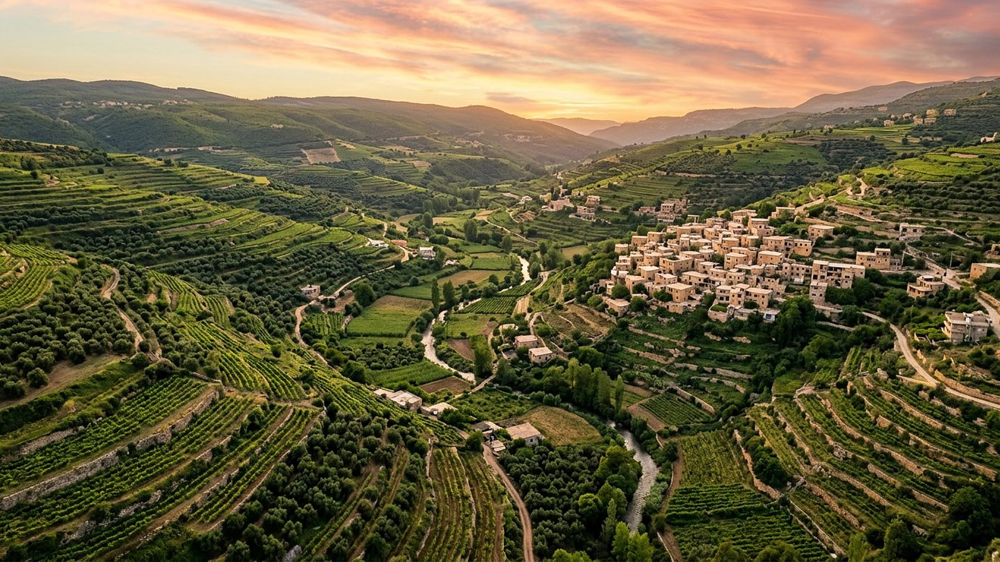

Salle 43 — Révélation 20 À VENIR
L’épreuve finale : mille ans de paix, puis un dernier choix
« Quand les mille ans seront accomplis, Satan sera relâché de sa prison. » — Révélation 20:7 (d’après Segond 1910)
Reconstitution numérique — la vallée des mille ans : des générations élevées dans la paix, avant l’épreuve.
Pourquoi une épreuve après mille ans de paix ?
La salle 32 s’était arrêtée au seuil : Satan lié mille ans, l’humanité relevée et éduquée. La vision, elle, continue : « quand les mille ans seront accomplis, Satan sera relâché de sa prison, et il sortira pour séduire les nations qui sont dans les quatre coins de la terre, Gog et Magog, afin de les rassembler pour la guerre ; leur nombre est comme le sable de la mer » (Révélation 20:7-8). Puis, en quelques versets, le feu du ciel dévore les rebelles, et le Diable rejoint la bête et le faux prophète dans l’étang de feu (20:9-10).
Dans la lecture retenue par ce musée, cette libération n’est pas un caprice : elle vérifie en pleine lumière ce que les mille ans ont fait des humains. Après avoir connu la vérité, goûté la paix, été relevés et enseignés, les humains rendus à la perfection choisissent une dernière fois — sans excuse d’ignorance ni de misère — de suivre Dieu ou de suivre le Séducteur. Ceux qui le suivent montrent que le mal n’était pas seulement un produit des circonstances ; ceux qui restent fidèles scellent l’univers pour toujours. Aucune date n’est avancée, ni pour le commencement ni pour la fin des mille ans.
Le récit en cinq temps
Avancez dans l’épilogue, d’une station à l’autre.
Le banc des preuves : le dernier chapitre transmis
FAIT ARCHÉOLOGIQUE
La Révélation dans le Codex Alexandrinus (EV-52)
Le Codex Alexandrinus (Ve siècle, British Library, Royal MS 1 D V-VIII) est l’un des plus anciens Bibles grecques presque complètes ; il transmet la Révélation, chapitre 20 compris — l’abîme, les mille ans, la libération et l’étang de feu. Le dernier acte du drame appartient donc au texte le plus anciennement conservé, et non à un appendice tardif.
LECTURE PROPHÉTIQUE
Un test de loyauté en connaissance de cause
Le musée relie ce relâchement à sa propre logique : à Éden, un humain parfait a failli sans avoir connu le bien promis ; après mille ans, des humains parfaits choisissent en sachant. L’enjeu n’est pas d’infliger une rechute, mais de fermer pour toujours la question ouverte en Éden — la souveraineté de Dieu contestée peut-elle encore séduire quelqu’un qui sait ?
DÉBATTU
Deux « Gog » à ne pas confondre
La vision réemploie les noms d’Ézéchiel 38-39 (salle 31) pour la multitude finale : reprise symbolique des mêmes noms, ou même événement relu ? Les traditions amillénaristes, elles, lisent tout le chapitre 20 au présent de l’Église. Le musée distingue deux rassemblements — la coalition d’Ézéchiel avant Harmaguédon, la multitude finale après les mille ans — et signale la discussion.
Quatre clés pour bien lire l’épilogue
1. Une libération limitée et annoncée
« Il faut qu’il soit délié pour un peu de temps » (20:3) : la durée est brève, l’issue n’est pas incertaine, et rien n’échappe au dessein. Le mal n’est pas réhabilité ; il est autorisé à se montrer une dernière fois tel qu’il est.
2. Séduits en pleine connaissance
Les rebelles de l’an mille ne sont ni ignorants ni opprimés : ils ont vécu le règne du Christ, vu les morts relevés, entendu la vérité entière. Leur choix révèle le cœur, exactement comme l’épreuve d’Éden — en sens inverse et à l’échelle de l’humanité guérie.
3. Pas de seconde chute des fidèles
Le texte ne dit pas que les fidèles tremblent : le feu du ciel met fin à la révolte avant tout siège prolongé de « la ville bien-aimée » (20:9). L’épreuve trie ; elle ne met pas l’univers en péril une seconde fois.
4. Après ceci, plus jamais
Le Diable jeté dans l’étang de feu, il ne reste que le jugement des morts (salle 33) puis la tente de Dieu (salle 34). L’épilogue ferme la parenthèse ouverte au jardin : plus de séducteur, plus de mort, plus de rébellion possible — la fidélité aura été prouvée dans les deux sens.
Prescience n’est pas fatalité — même après mille ans, un choix
Le passage le plus fort de cette salle est peut-être celui-ci : même guéris, même instruits, même comblés, les humains restent libres — jusqu’à pouvoir encore mal choisir. La prescience n’a jamais fabriqué des automates ; elle annonce un Dieu qui, au bout de mille ans de bienfaits, respecte encore un « non ».
Salle 32 : le règne de mille ans · Salle 31 : Gog de Magog (l’autre rassemblement) · Salle 33 : le grand trône blanc
Écouter la salle
Transcription de la narration
Bienvenue dans cette salle du musée. Vous allez découvrir une vallée paisible de villages et de vignes, un rivage immense couvert d’une foule lointaine au crépuscule, puis une plaine silencieuse au lever du soleil après la tempête. Bonne visite. La visite avance en cinq étapes courtes. Prenez le temps d’observer chaque image et de lire les panneaux : ils présentent la fin d’un très vieux livre, un épilogue de mille ans de paix, et un manuscrit conservé à Londres.